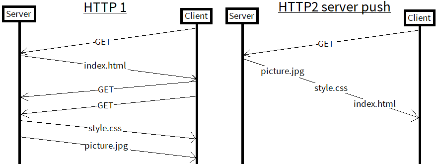

Web app auth is a tricky subject.
TL:DR; Start with a simple Bearer token you generate, work up to using JWTs or third party auth providers when needed
The majority of GitHub pages sites still use plain old HTTP, making it easy to snoop in on the traffic between those sites. Adding HTTPS (S for Secure) to your website keeps things between you and your readers private. Modern Browsers will shortly be makeing it more and more visible to users when a site is using “insecure” HTTP, not a good look:
Github Pages offers simple to use HTTPS for github.io domains but not for custom domains. Until recently you had to shell out $ for certificates to enable HTTPS, but now the fantastic Let’s Encrypt enables you to get them for free. You can even automate the process, in my case I used the Golang autocert package which provides a autocert manager you can load into your server.
Green padlock is best padlock.
A new feature implemented with HTTP2 is server push. This is where you preemptively send files that you think the current user will request, before they request them.
For example: a web page consists of a html file with an image and css file. Usually a user would download the html, parse it to find the src links and then subsequently request the image and css, wasting time. Server push sends all three during the initial html file request, saving time:
For a small site like mine, keeping the entire website in memory doesn’t pose a massive problem but does offer increased speed as opposed to accessing the data from a disk or SSD. By keeping all of the text files and pictures in memory, requests can be served that much faster.
I keep the site available via the old github pages github.io domain as a good speed test for my new server. If you are running Chrome or Firefox, hit F12 and you can watch the network performance between the two. Here's an example:
Github Pages HTTP Self hosted HTTPSThanks for reading. If you're feeling generous please consider making a donation to Let's Encrypt.